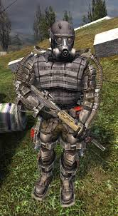
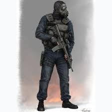
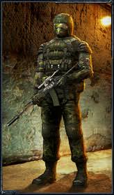

Угрупування зі всесвіту сталкер(у всіх угрупуваннь є свої модифіковані комбінезони)
Воля/свобода
“Анархічне угрупування цілью якого стоїть створення незалежного заповідника на території зони»”
Долг
“Головний супротивник волі головна мета знищіти зону
Сталкери
“Звичайні нелегали які пробрались на територію зони»”
Бандити
Колишні увʼязнені або бандити які перебувають у розшуку
Чисте небо

Угрупування ціль якого вивчати зону
Найманці
Кілери яких відправлені в зону для вбивства конкретної персони або діставлення документів і артефактів
Вчені
Задача вчених вивчати зону за будь-яких обставин
Військові
Основна задача охорона блок-постів та захоплення важливих документів
Торговці
Основна задача продавати та купляти речі та видавання квестів(в серії ігор сталкер є багато торговців на фото зображений один з найбільш відомих)
Монолітовці
Фанатики які охороняють центр зони від стороніх осіб
О-сознання
Творці зони, основна мета припинити розширення зони